01 / STORY & DIRECTION
Write or repair a scene
Work on cause, character action, dialogue and performance. A script or director treatment can be the complete deliverable.
Read a Director Agent caseSOURCE EDITION · 5.6 DAILY WORKFLOW
A practical filmmaking workflow for Agent-assisted creation: shape the story, make directing decisions, design the image, and carry those decisions through production.
从剧本到导演、视觉、资产、分镜与成片。先选本次要交付的结果，已有材料可以直接接入，不必每次走完整条流程。
THE COMPLETE PRODUCTION WORKFLOW
这张总览保留完整的创作与制作交接：剧本、导演方案、视觉风格、资产、分镜、保存恢复、提示词、可选预演、生成、剪辑与验收。虚线是按需分支或修复返回；局部任务可在任何阶段结束。
Scroll inside the diagram to explore it, or open the full-size version above.

主线交接的是已经做出的创作决定。市场研究按需使用；D 层写入须单独明确批准；白模只在需要先看空间与节奏时进入。
Story & direction / 剧本与导演 · 1director-agent — screenplay creation, editing, diagnosis, directing and conditional AI-executable script compilation.
Eight genre directions / 八类型 · 8cyberpunk-design · epic-design · fantasy-design · horror-design · noir-design · romance-design · war-design · wuxia-design
Two further visual directions / 另两类风格 · 2hard-sci-fi-visual-director — experimental.xianxia-visual-director — external, not bundled.
Reusable visual assets / 静态资产 · 3character-asset · scene-asset · prop-asset — prompts, reference images and reviewed asset contracts.
Shots & design memory / 分镜与记忆 · 1ai-storyboard-director 5.6 — photography design, shot decisions, five-column output, six-module prompts, save and restore.
Previs & production / 预演与制作 · 2whitebox-previs-executor (experimental) · produce-ai-video — optional spatial previs, generation, editing, sound and full playback review.
Market & reviewed knowledge / 市场与知识 · 2d-official-market-analysis · d-data-analysis-semantic-layer — research first; knowledge writing only after explicit approval.
Specialized short drama / 短剧专项 · 1ai-short-drama-production — experimental contract; align its handoff with 5.6 before use.
Auxiliary web design / 网页辅助 · 1web-design-director — interfaces and workbenches; outside the film-production chain.
仓库包含 18 个常规包与 2 个实验包，共 20 个包。仙侠作为外部能力计入完整流程，上游未授权再分发，因此这里不附带其 Skill 源码。14 张图为本次原创作品，不代表所有能力已经跨任务稳定验证。
START WITH ONE OUTCOME
01 / STORY & DIRECTION
Work on cause, character action, dialogue and performance. A script or director treatment can be the complete deliverable.
Read a Director Agent case02 / SHOTS & PROMPTS
Choose the viewpoint, lens, blocking, motion and cut. Keep the selected design available for the next session with 5.6 save and restore.
Open Storyboard Director 5.603 / FILM PRODUCTION
Carry reviewed assets and shot decisions through generation, selection, editing and sound, then watch the whole result and repair visible failures.
Open the production Skill14 ORIGINAL WORKS · 10 VISUAL DIRECTIONS
保留不同类型的特色，用构图、光影、材质与色彩把画面做完整。本次 14 张作品已经过创作者本人审阅接受；它们证明这批具体样本的结果，不等于完整影片、同题因果对照或跨任务稳定能力。
Images are shown uncropped. Select any image to open its original PNG. Inspect the sample manifest.
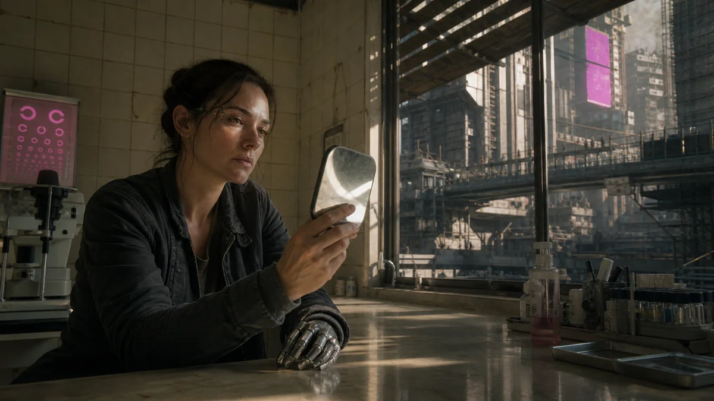
CYBERPUNK / 赛博朋克
义体、日间城市与一次安静的自我确认。
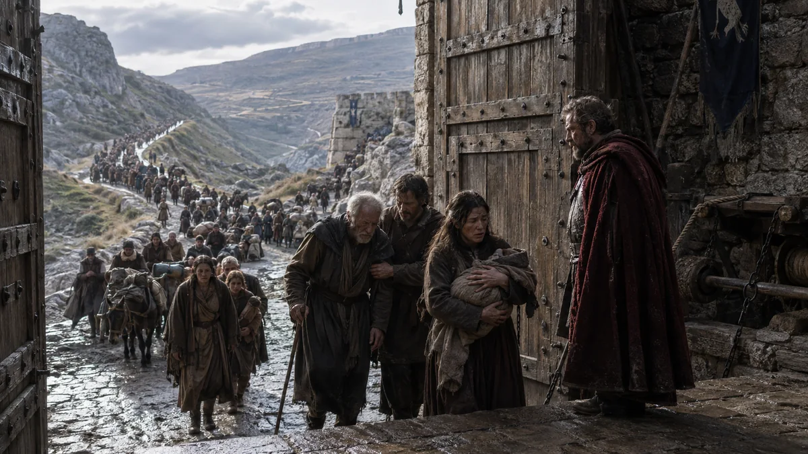
EPIC / 史诗
一座城门打开，个人选择与人群命运相连。
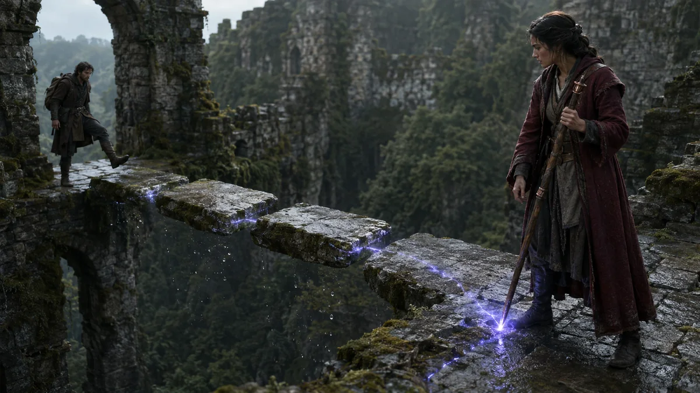
FANTASY / 奇幻
魔法有作用源，也改变具体的石桥与处境。
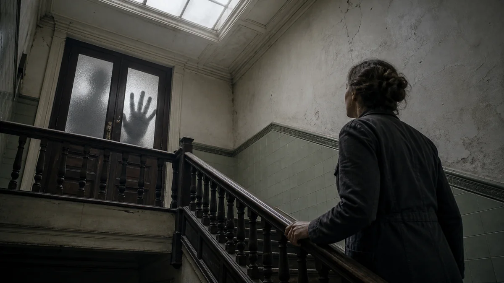
HORROR / 恐怖
白昼的楼梯、磨砂玻璃与无法忽视的来访者。
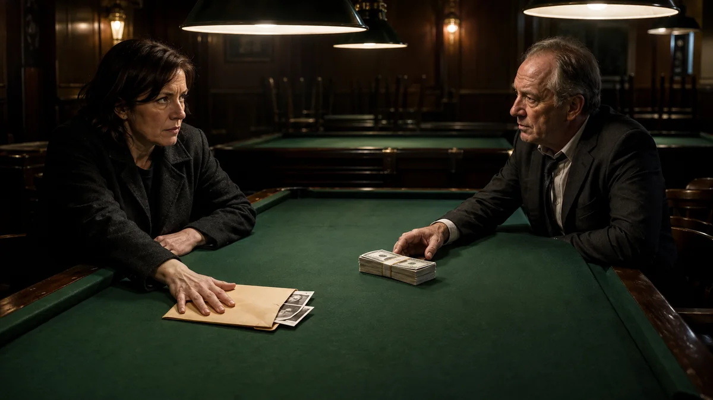
NOIR / 黑色
目光、照片与现金，先于一句对白交代交易。
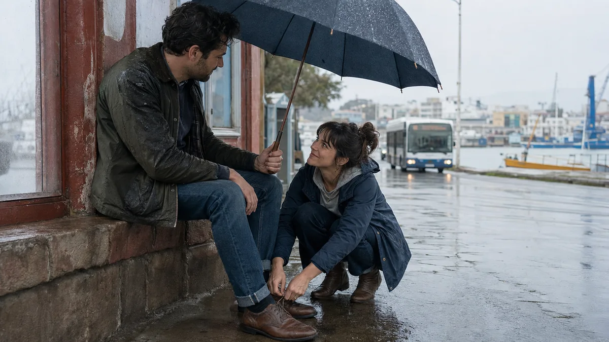
ROMANCE / 爱情
一人系鞋带，一人把伞偏向对方。
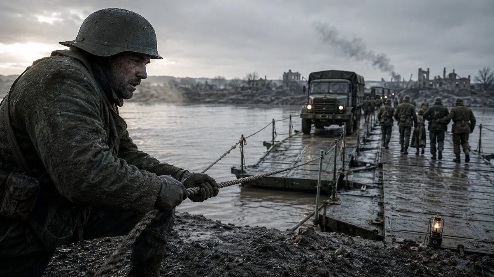
WAR / 战争
把重量、距离和行动中的人放回战争画面。
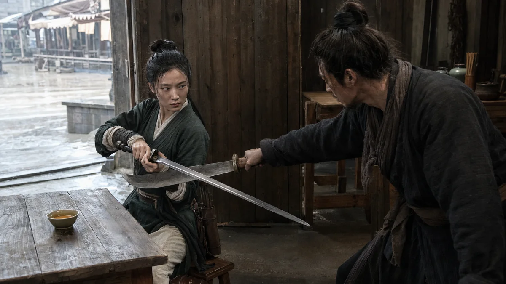
WUXIA / 武侠
刀剑与人的力量关系，落在一间客栈里。
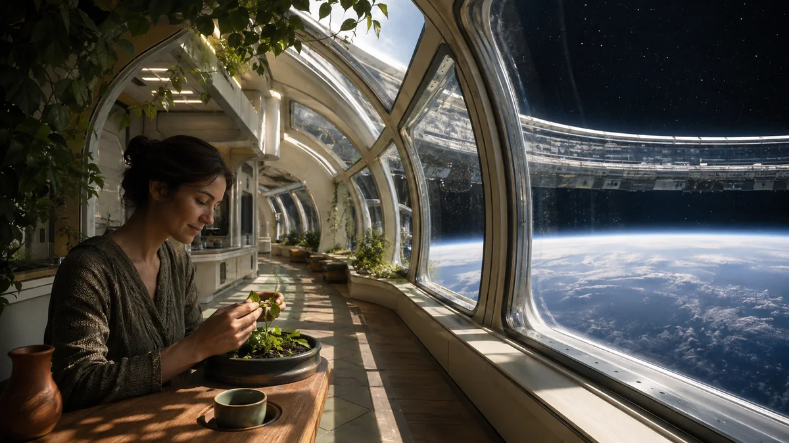
HARD SCI-FI / 硬科幻
日常生活与轨道设施处于同一个可读空间。
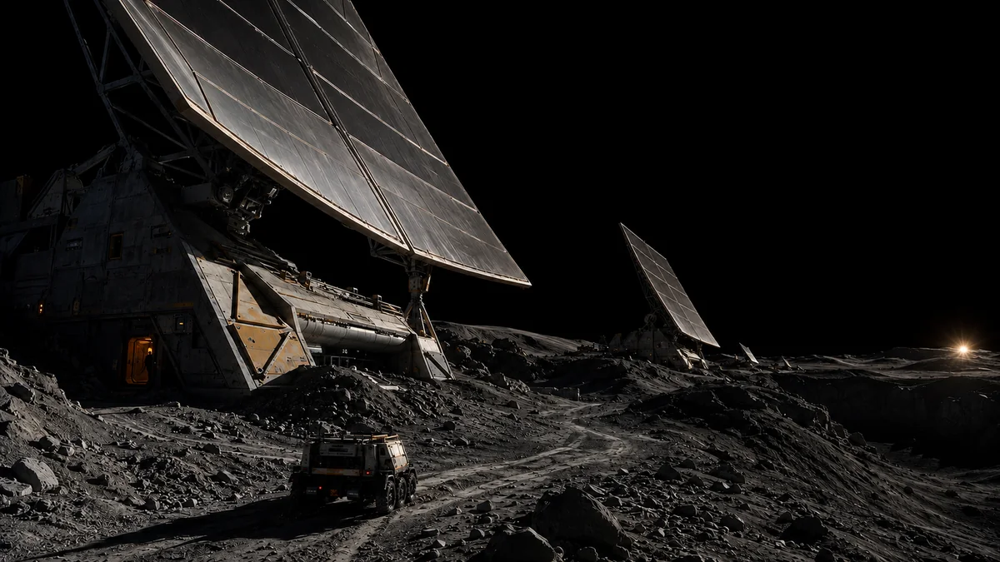
HARD SCI-FI / 硬科幻
月面设施、尺度参照与光照关系。
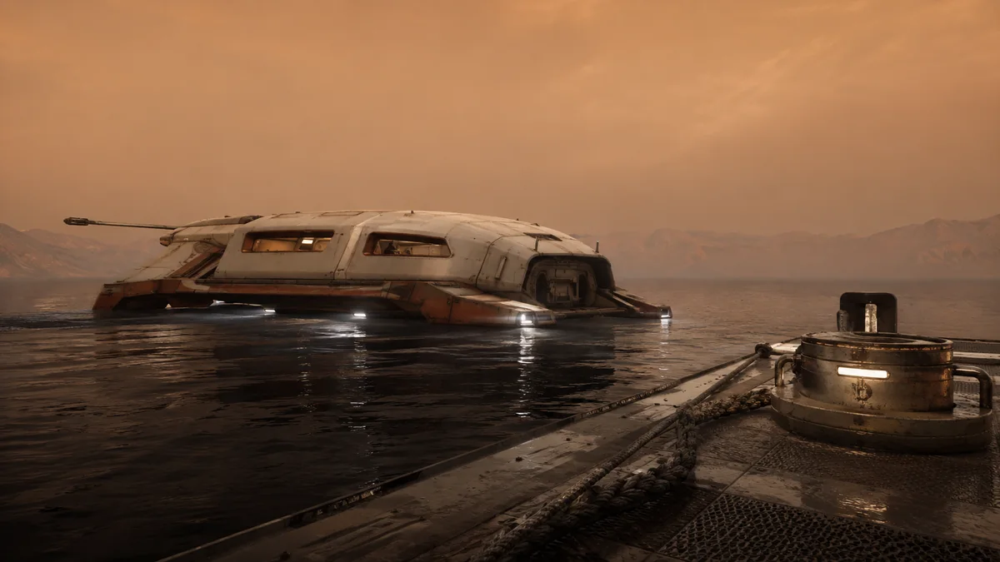
HARD SCI-FI / 硬科幻
厚重船体、港口设备与异星环境中的泊岸。
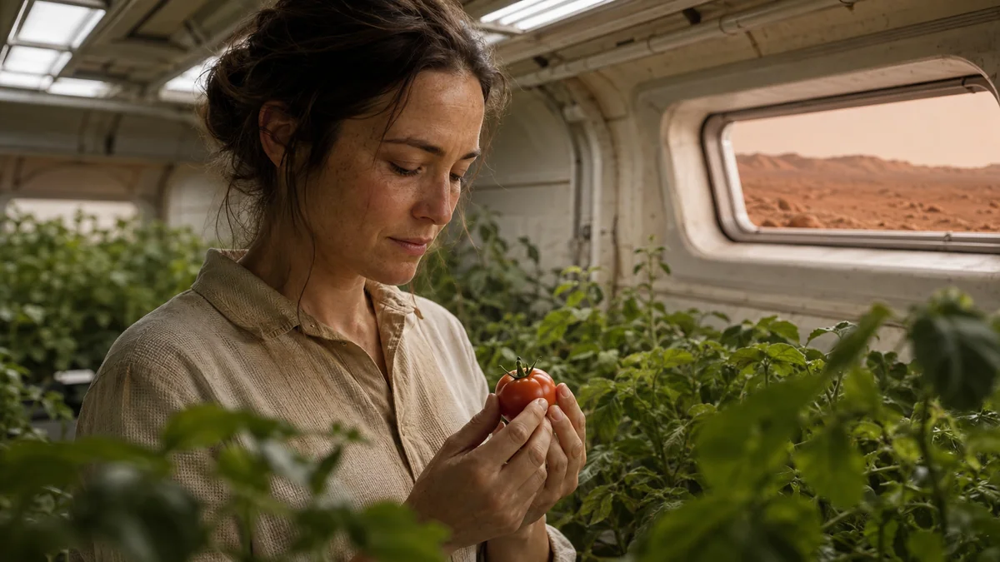
HARD SCI-FI / 硬科幻
一颗果实把遥远的定居生活变成具体经验。
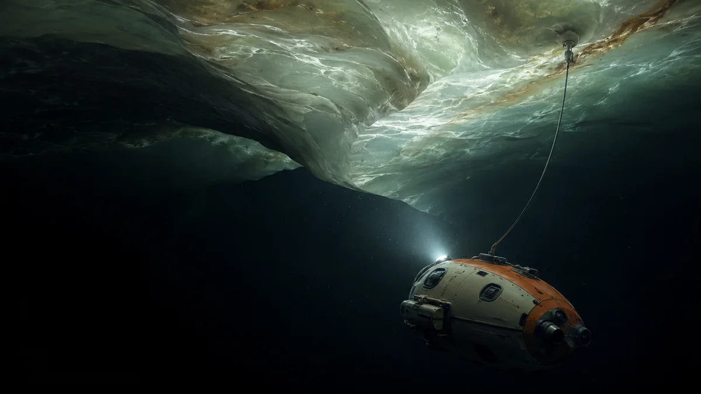
HARD SCI-FI / 硬科幻
潜器、系缆与冰顶，构成一次克制的探索。
XIANXIA / 仙侠
东方建筑、云海与巨钟共同建立神域尺度。
CURRENT SOURCE · RETAINED EVIDENCE
The maintainer-selected daily source is Storyboard Director 5.6. It carries directing intent, selected shots and scene state through save and restore, alongside the existing camera and prompt contracts.
The illustration retains an earlier 5.4.4 text case: a shot heading makes optics, camera position, path, speed, focus and endpoint visible.
This historical case records text behavior. It is not the 5.6 runtime, generated-video evidence or a new Release announcement.
Inspect the historical 5.4.4 case
REAL LOCAL MEDIA
These original clips were generated on the maintainer's local machine during 3D previs research. They are published as bounded evidence—not as finished AI films or proof of external adoption.
5.0s · 960×540 · 24fps
Shows a playable push, actor blocking, a hard cut, lateral tracking, and scene parallax in a rough 3D space.
Historical local previs sample. It records camera and blocking behavior, not generated-video quality or a complete production workflow.
2.8s · 960×402 · 67 frames
Shows two-hand grip geometry, final-surface contact, a held impact interval, and opposite recoil in one bounded action.
Single-action gate only. It is not a complete fight, a final render, a production-ready 30-second sequence, or user approval.
Source hashes, dimensions, status, exclusions, and publication boundaries are recorded in the media evidence manifest.
CHOOSE ONE SKILL
npx --yes skills@latest add 62656456/ai-film-skills --list
npx --yes skills@latest add 62656456/ai-film-skills \
--skill ai-storyboard-director \
--agent codex \
--copy \
--yesChoose a regular Skill from source, or inspect an experimental package before adopting it. The workflow's external Xianxia capability is documented separately and is not included in these packages.
Current daily source: Storyboard Director 5.6. Host activation and generated results still depend on the selected Agent environment and tools.
Historical public Release: v1.3.0. Its packaged Storyboard Director is 5.4.4. Those downloads remain a historical snapshot; use the current source for the 5.6 daily workflow. Open the v1.3.0 snapshot.
READ THE RESULT AT ITS ACTUAL SCOPE
These 14 imagesOriginal, creator-accepted samples from this round. The gallery preserves complete frames, originals and sample records.
Text and package checksThe Director case remains SELF-AUDIT ONLY. Structure, isolation and text behavior describe their own checks; they do not certify every future creative result.
Video and final acceptanceThe playable clips below the workflow are bounded previs samples. Complete generated films, model execution, continuity and user acceptance require their own evidence.
ORIGINALITY & COMMERCIAL USE
允许商用 · Apache 2.0本仓库原创技能、脚本、文档、提示词与有权许可的原创示例，可按 Apache 2.0 用于个人或商业项目、修改、集成和再分发；保留适用许可和版权说明，并标明文件修改。
真实说明原创过程展示图由项目自主设计、AI 辅助生成并经人工选择与修订，14 张均已获维护者接受。该记录不承诺图像独占、登记状态或任何输入素材的权利已获清理。
第三方内容分别授权外部仙侠技能仅提供上游入口，不随本仓库再分发。使用他人素材或生成新作品时，仍须遵守相应素材许可、平台条款和适用权利要求。
Read the full originality and commercial-use statement / 阅读完整说明
{kind=link}
{kind=link}
{kind=link}
{kind=link}
{kind=link}
{kind=link}
{kind=link}
{kind=link}
{kind=link}
{kind=link}
{kind=link}
{kind=link}
{kind=link}
{kind=link}